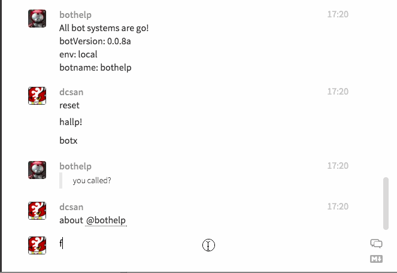
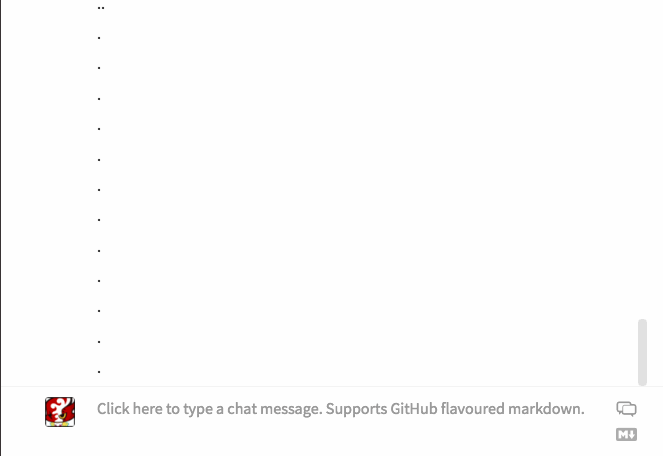

Gitterbot
GitterBot with Wiki integration, and more!
View the Project on GitHub dcsan/gitterbot

Built by RIKAI Labs. We Build Chat Apps.
We can customize gitterbot for you!
Contact dc@rikai.co
Announcing GitterBot!
GitterBot is a full featured bot for Gitter.im First launched as "CamperBot" to integrate with FreeCodeCamp, the largest online bootcamp in the world, where he supports more than 20,000 users in the main chatroom.
Features
Github Wiki Integration
Gitterbot can pull entries from a projects github wiki right into the main chat. This means you can have a growing knowledge based that's associated with your project be instantly available. You can search for articles in a projects github wiki Share wiki summaries in chat
Useexplain to pull a wiki summary right into the chat:
Many chatbots are for the user to talk to 1:1. But this gitterbot is designed to support user:user chats, much like a teacher's assistant. He will make repetive tasks easier.
Often the same question comes up again and again, so you can just ask the bot to explain the point to another user.
